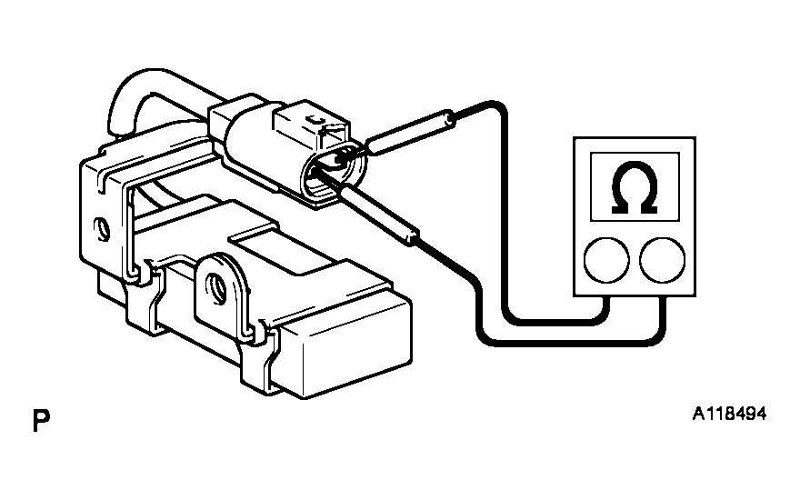

On-Vehicle Inspection
- DISCONNECT CABLE FROM NEGATIVE BATTERY TERMINAL CAUTION: Wait at least 90 seconds after disconnecting the cable from the negative (-) battery terminal to prevent airbag and seat belt pretensioner activation.
- REMOVE COOLING FAN RESISTOR
- INSPECT COOLING FAN RESISTOR
- Measure the resistance between the terminals.

Courtesy of © TOYOTA, LICENSE AGREEMENT TMS1002Standard resistance: 1.17 to 1.43 Ω at 20°C (68°F)
If the result is not as specified, replace the resistor.
- Measure the resistance between the terminals.
- INSTALL COOLING FAN RESISTOR
- CONNECT CABLE TO NEGATIVE BATTERY TERMINAL